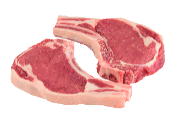

The butcher
Cortes nobres com atendimento nobre

O melhor lugar está aqui !
por Gustavo Blasius > Receitas > Chuleta
Atualizado 22/07/2019
Como preparar: chuleta

Ingredientes
- 1 Bife grande de chuleta bovina;
- 5 dentes de alho picados;
- Pimenta mista (pimenta do reino + Louro + Cominho) á gosto
- Sal grosso á gosto
- 2 colheres de sopa de manteiga de garrafa.
Modo de preparo
- Tempere a carne com o alho e a pimenta mista. passe bem nela toda.
- Usando uma frigideira grande, coloque no fogo alto com uma colher de manteiga.
- Quando a manteiga derreter, faça um movimento circular para que todo o fundo da frigideira fique untado;
- Vamos agora selar a carne, esse processo é ir tostando rápido todos os lados da carner, vai trocando de posição sem usar garfo, não podemos furar a carne.
- Agora podemos colocar o sal grosso, quantidade menor que a de um churrasco, por que o sal não vai cair como o da churrasqueira.
- Com a manteiga que sobrou, vamos mantendo a carner molhadinha.Repare que o sangue vai começar a querer sair.
- Vá virando a carne até chegar ao seu ponto de preferência.